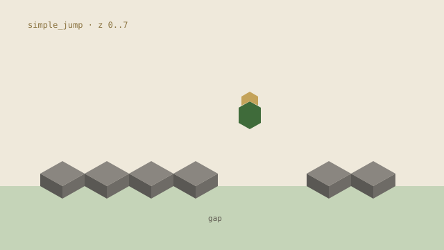
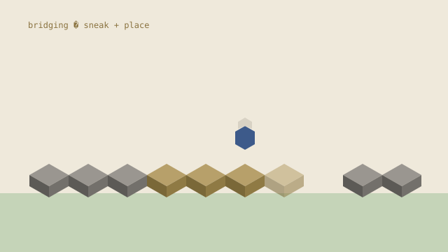
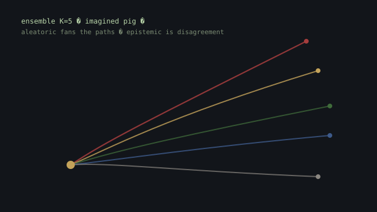

Compose an environment, a reward, an algorithm, and a net.
Parkour
The agent jumps across stone platforms as quickly as possible, learning that failure means death.

Bridging
Building a bridge across a gap is dangerous. The agent must learn to place build carefully while avoiding falling.

World models
Malmo steps are slow. A Dreamer-style model lets the agent train inside predicted futures. An ensemble splits pig-motion noise from model ignorance, then shortens the dream when the future is genuinely unpredictable. Shown on hunting.
